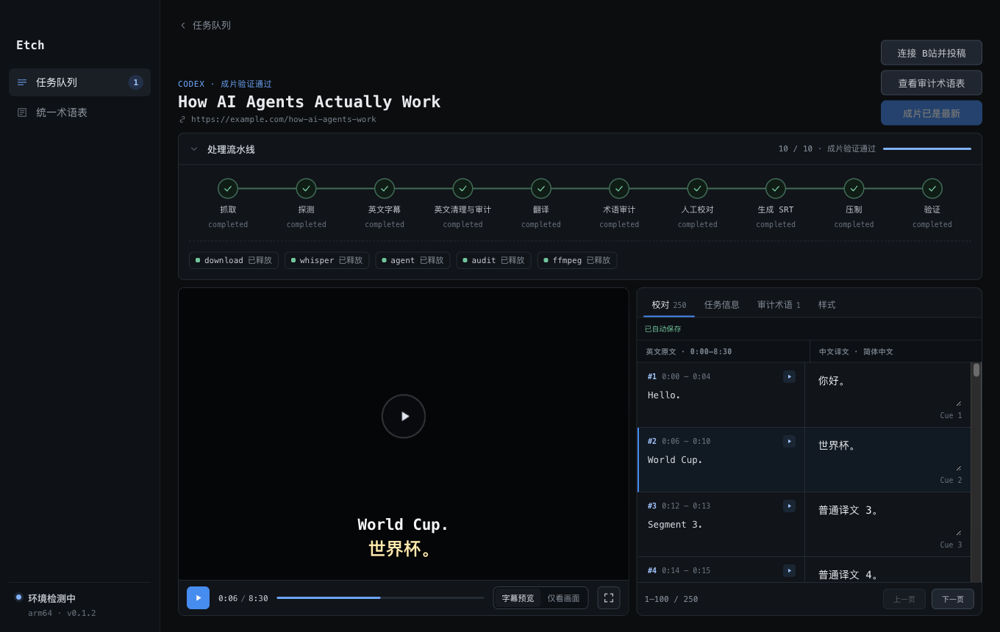

双语硬字幕
支持 YouTube、Vimeo 和 X / Twitter 的公开视频链接。取不到英文字幕时，使用 mlx_whisper 在本机转写。
- 按来源选择媒体与字幕获取方式
- 长字幕分批翻译，每批通过校验后保存
- 校对后生成双语 SRT，再压制并验证成片
交付bilingual.srt
final.mp4
公开版 v0.2.18 提供双语硬字幕、视频总结和网页翻译，并按阶段保存进度，也包含 B站投稿。
公开版 0.2.18 · Apple Silicon · macOS 13.5+ · 仅支持 HTTP(S) URL · 暂不支持本地文件导入 · Apple Development 签名，未经公证

Etch 在创建任务时分流：视频走字幕或总结，网页走文档处理。三者共享恢复机制，但各自产出不同文件。
支持 YouTube、Vimeo 和 X / Twitter 的公开视频链接。取不到英文字幕时，使用 mlx_whisper 在本机转写。
交付bilingual.srt
final.mp4
从字幕生成素材包，核验可外查事实，再让 A / B / C 三个隔离会话分别成稿、评分与融合。
交付summary.md
images/（可选）
支持普通网页、单条 X 帖子和 X Article。可以只转 Markdown，也可以选择标准翻译或精校翻译。
交付translation.md
translation.html
任务状态、已提交产物和人工选择都写入本机任务记录。异常退出后，Etch 读取 task.json 和已验证文件继续执行。
下载、转写、字幕生成和压制都在 Mac 上完成；翻译数据是否离开设备取决于所选 Agent CLI。
字幕与长文翻译按批提交。后续失败或重启时，已通过本地校验的批次不会重做。
成本、字幕歧义、文档校对、外部核验受限和配图选择需要明确确认，不会静默越过。
字幕、总结和文档任务都能自定义分类；分类不会改变任务类型或流水线状态。
用有投稿权限的账号扫码连接后，可手动确认投稿信息，也可在新建字幕任务时开启自动投稿。公开 v0.2.18 包含这条路径。

当前边界只支持单账号、单投稿并发；不支持定时、多账号、审核轮询或远端稿件管理。提交后请到 B站创作中心查看审核状态。
Etch 会逐项检查本机工具。网页只转 Markdown 不需要视频工具或 Agent；网页翻译、字幕翻译和视频总结需要至少一个已登录的 Agent CLI。